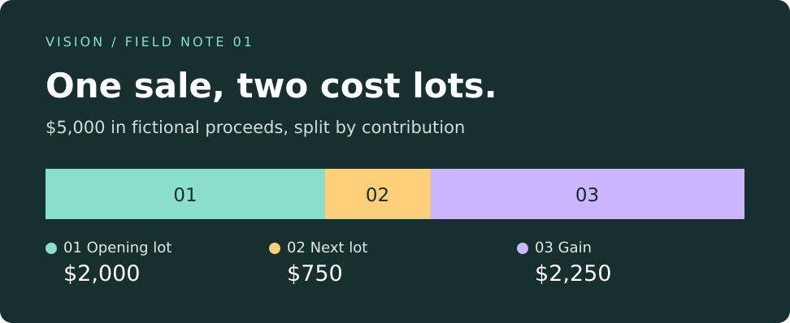

Reconciliation notebook • Fictional worked example
How much of a sale
is actually a gain?
In this example, only $2,250 of a $5,000 sale is a gain. The rest is the cost of units already bought. Follow the two lots to see why.

- 01 · Opening lot $2,000
- 02 · Next lot $750
- 03 · Realized gain $2,250
01 / Rebuild the sale
Start with the oldest units.
FIFO means first in, first out. The case sells 2.5 units. Use up the opening lot first, then take only the units still needed from the next purchase.
| Acquired | Units used | Unit cost | Matched cost |
|---|---|---|---|
| 2025-12-01 | 2 | $1,000 | $2,000 |
| 2026-02-01 | 0.5 | $1,500 | $750 |
$5,000 proceeds−$2,750 matched cost=$2,250 realized gain
02 / Compare like with like
Keep gains and income separate.
Compare each reconstructed amount to the corresponding fictional declaration. A positive difference means the reconstructed number is higher. It does not calculate tax owed.
| Category | Rebuilt | Declared | Difference |
|---|---|---|---|
| Realized gain | $2,250 | $2,000 | $250 |
| Income | $180 | $100 | $80 |
03 / Verify the inputs
Trace the evidence, not the owner.
The $250 gain difference and $80 income difference come only from the invented records below. No chain observations or saved review notes enter this report. Missing cost or price evidence blocks the calculation.
Inspect the four fixture records and their price sources
- opening-1synthetic://ledger/opening-1synthetic://prices/opening-1
- buy-2synthetic://ledger/buy-2synthetic://prices/buy-2
- sell-3synthetic://ledger/sell-3synthetic://prices/sell-3
- reward-4synthetic://ledger/reward-4synthetic://prices/reward-4
Reproduce and check this report
From the project folder run python3 report.py --check. To rebuild, run python3 report.py. Each file is generated from the same synthetic case the app uses.
Calculation fingerprint (SHA-256, not a signature):
64a26231d5b61dffd63fb92b62d8e496e1eaa4f799b028d9d955dc1e9669b698